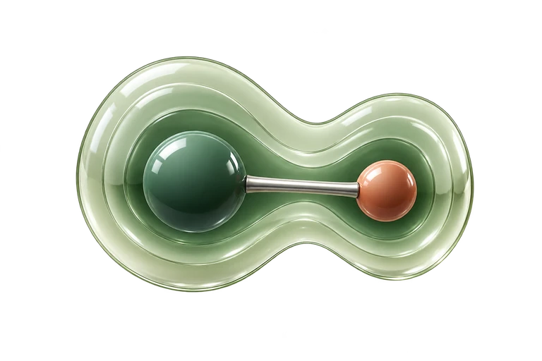
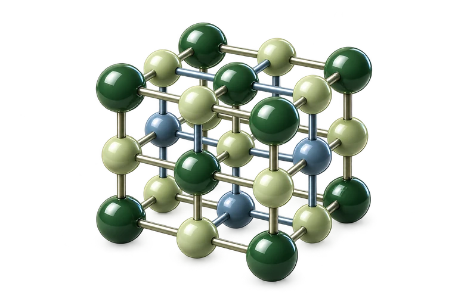
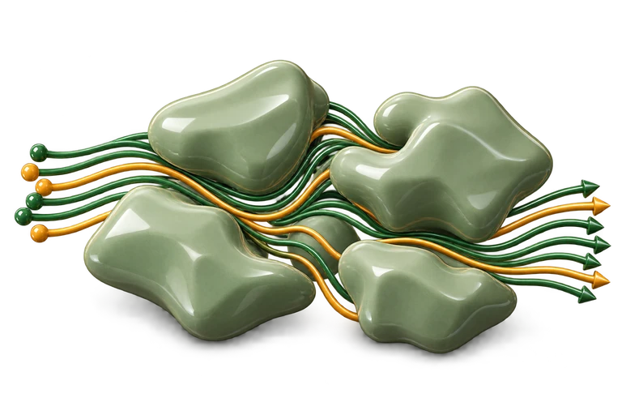
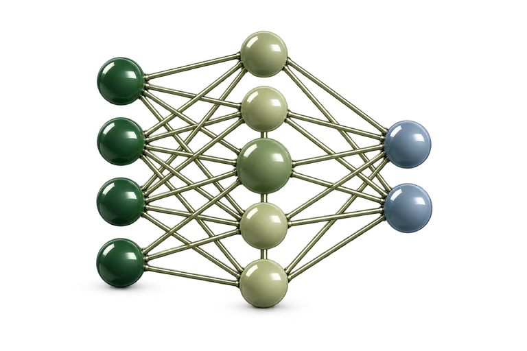
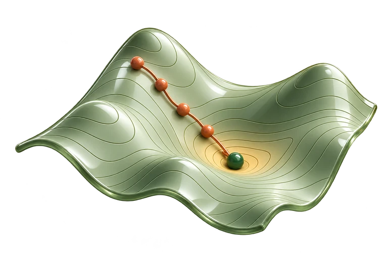

01  Physical Chemistry Nature Communications · 2021Thermochemical electronegativities of the elements ↗
02  Solid State Physics ACS Nano · 2021Computational Modeling of 2D Materials under High Pressure and Their Chemical Bonding ↗
03  Fluid Dynamics Physics of Fluids · 2026Nonisothermal global-pressure exactness in fractured multiphase flow ↗
04  Machine Learning Computational Materials Science · 2024Fitting to magnetic forces improves the reliability of magnetic Moment Tensor Potentials ↗
05  AI Scientific Reports · 2024Melting simulations of high-entropy carbonitrides by deep learning potentials ↗